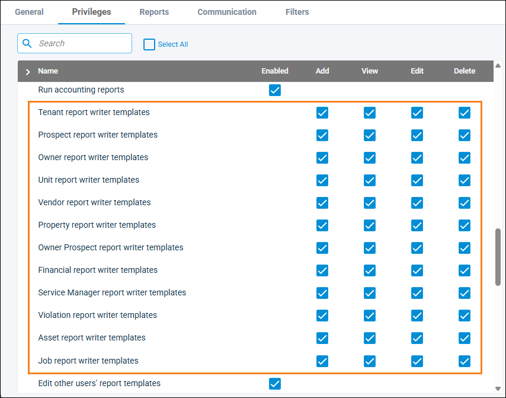
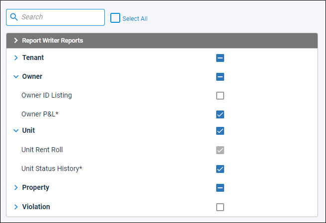
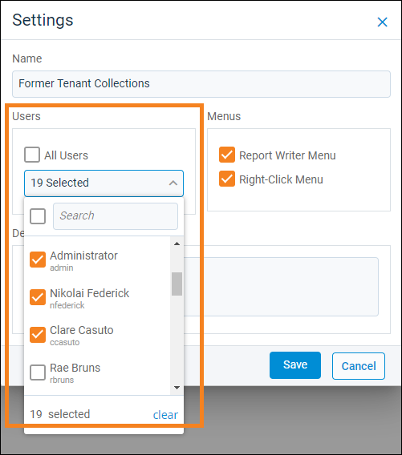

Source: https://rmxhelp.rentmanager.com/Topics/Express/KB/User-Privileges-Report-Writer.htm
Control Custom Report Access
Report Writer (RW) is a tool in Rent Manager that allows you to create your own custom reports that you and other users can then use to generate the specific data you need in the format you specify. Like standard Rent Manager reports, you can designate which of these customized reports each user can access. Additionally, you can control which users have access to a custom-written report from the report itself.
These user-created reports can be generated on an individual basis or added to report batches. However, there are specific privileges that determine what RW reports are available for a user to select. This topic guides you through how to grant and customize the permissions for users so they can access the RW reports they need.
There are a combination of privileges that are required to allow a user to generate or create RW reports, since these customized reports are separated by entity type (asset, tenant, owner, and so on). There are also additional privileges you may need for custom financial reports created using Financial Report Writer (FRW).
Set Up Access to Manage Report Writer Templates
Related Privileges
| Group | Privilege | Column |
|---|---|---|
| System | Manage assigned users and privileges | View, Edit |
| Manage all users and privileges | View, Edit |
For more information, refer to Control User Access.
In order for a user to create or update Report Writer (RW) report templates, there are different privileges required. Their level of access is determined by the report writer templates privileges granted for the associated entity type.
For example, if a user has View and Edit privileges for Owner report writer templates and View and Add privileges for Vendor report writer templates, they can make changes to any owner-type RW report template (unless they do not have access to edit templates created by other users). They cannot edit vendor-type RW report templates, but can still view existing vendor-type RW reports or create new vendor-type RW reports.
To determine the level of access users have to RW report templates for each entity type, do the following:
-
Go to
 arrow_forward
arrow_forward  Administration arrow_forward Users and select the user from the list.
Administration arrow_forward Users and select the user from the list.
The User details page displays. -
Click the Privileges tab and expand the Letter/Email Templates/Reports/Packets group.
-
For the Run reports privilege, check the box in the Enabled column.
-
For the report writer templates privileges, determine which entities for which the user can manage RW report templates.

For example, if the user should have access only to property-type and unit-type RW report templates, they need only privileges for Property report writer templates and Unit report writer templates.
-
Check the desired boxes to determine the level of the user's access to RW report templates for each desired entity type.
Column Description Add
Allows the user to create or import new Report Writer templates of the corresponding entity type(s).
View
Allows the user to access the Report Writer Manager and view information about RW templates of the corresponding entity type(s). Additionally, they can export a copy of the RW template as a file to their local computer.
Edit
Allows the user to edit and save changes to RW templates of the corresponding entity type(s). This includes editing user access at the report level, the format and information generated on the reports, and any other settings for the report templates.
Delete
Allows the user to permanently delete RW templates of the corresponding entity type(s) from Rent Manager. Once deleted, RW reports cannot be recovered.
More Information
These privileges determine which RW template types are available to the user in the Report Writer Manager, regardless of the individual report access granted to the user's account on the Reports tab. For example, if a user does not have access to a specific tenant-type RW report, they cannot generate that report.
However, if they have Tenant report writer templates access to Edit or Delete, they can still make changes to the report's RW template or delete that report from the system.
-
Optionally, if the user should be allowed to edit or delete Report Writer templates created by other user accounts based on their access above, for the Edit other users' report templates privilege, check Enabled. Otherwise, make sure this privilege is unchecked if they should only be allowed to edit/delete RW templates they created.
-
Click Save.
The user can now access Report Writer Manager and Report Writer templates of the designated entity type(s).
Set Up Access to Generate Report Writer Reports
There are two ways you can manage who has access to each report: at the user level and at the Report Writer Manager level. Editing at the user level allows you to customize a specific user's access to which RW reports they can generate, while editing at the Report Writer Manager level allows you to determine which users can generate a specific RW report without manually going through each user account.
Option One: User Level
Related Privileges
| Group | Privilege | Column |
|---|---|---|
| System | Manage assigned users and privileges | View, Edit |
| Manage all users and privileges | View, Edit |
For more information, refer to Control User Access.
To determine which RW reports the user can generate, do the following:
-
Go to
arrow_forward Administration arrow_forward Users and select the user from the list.
The User details page displays. -
Click the Privileges tab and expand the Letter/Email Templates/Reports/Packets group.
-
For the Run reports privilege, check the box in the Enabled column.
-
Click Save.
-
Click the Reports tab.
In the Report Writer Reports section, a group for each entity type displays if there is a RW report that was created for that entity. -
Expand each group and check the box next to each RW report the user can access.

More Information
Reports marked with an asterisk (*) have access granted to All Users on the RW template's settings. Even if you uncheck the box here, the user still has access to the report. To remove their access, refer to the next heading below for option two.
A gray check displays if the user inherited access to that RW report from a user role. Access to that report can only be removed if it is unchecked on the associated user role's Reports tab. For more information, refer to User Roles (Page).
-
Click Save.
The user now has access to the selected Report Writer reports.
Option Two: Report Writer Manager Level
Related Privileges
| Group | Privilege | Column |
|---|---|---|
| Letter/Email Templates/Reports/Packets | Entity report writer templates | View, Edit |
| Edit other users' report templates | Enabled |
The Entity varies based on Report Writer template type(s) to which the user has access.
Additionally, on the Reports tab, you must have access to the associated Report Writer report.
To manage the users who can generate a specific Report Writer report, do the following:
-
Go to
arrow_forward  Reports, then click Create Report.
Reports, then click Create Report.
The Report Writer Manager page displays. -
In the Report Type section to the left, select an entity to display Report Writer templates of that entity type.
-
For the desired report template, click
 arrow_forward Settings.
arrow_forward Settings.
The Settings pop-up displays. -
In the Users section, select each user or user role in the drop-down list that can generate this RW report. Alternatively, check All Users to grant this privilege to all current and future users in the system.

More Information
RW templates with All Users checked on the template's settings cannot have access to the report removed at the user level. To remove a user's access to the RW report, this option must first be unchecked.
RW templates with a user role selected cannot have access removed at the user level. To remove access to the report for a user with that user role, the report must be unchecked on the user role's Reports tab or the user role must be unchecked on the Report Writer template. For more information, refer to User Roles (Page).
-
Click Save.
The selected users and/or user roles have access to generate the report.